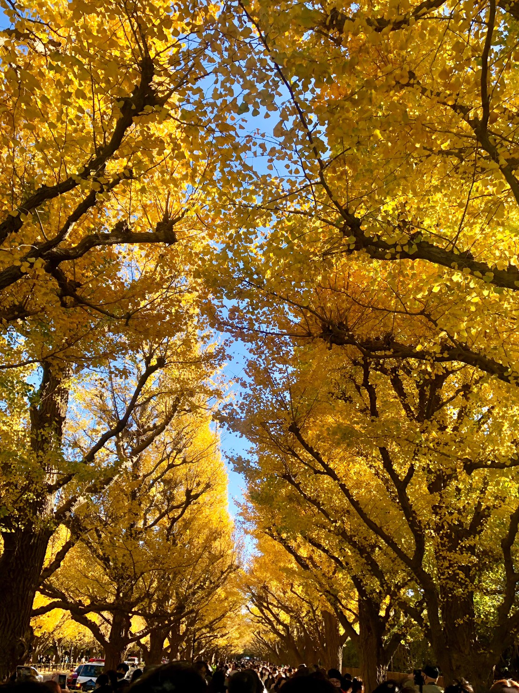
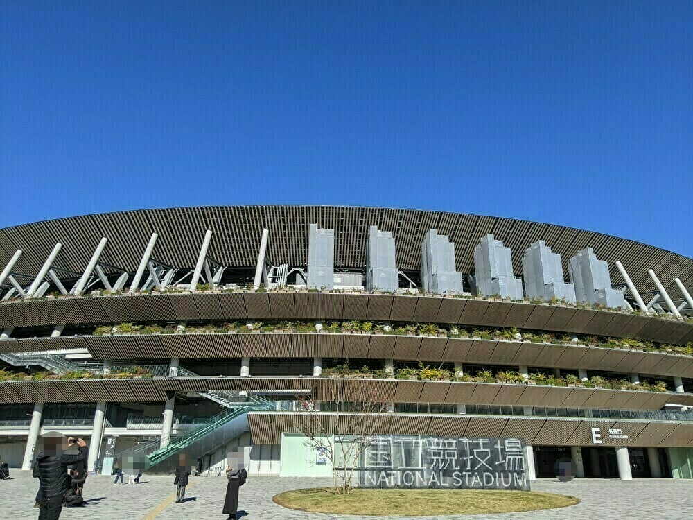

明治神宮外苑散歩
～イチョウ並木～
11/28 2021
カテゴリー：通常散歩
今回は紅葉の季節で有名な明治神宮外苑にある『イチョウ並木』へ散歩しに行きました。やはり11月の週末ということもあり多くの通行人が居られて、ゆっくりと紅葉を楽しむことは出来ませんでしたが、今の時期にしか見ることのできない貴重な自然の様子をお伝えしようと思います。
どうにかこうにか大量にいらっしゃる通行人が映らない様に頑張って撮影した写真になります。広がる綺麗なイチョウの紅葉は格別です。こんな綺麗な風景がほんの数日しか見ることが出来ないとは何とも残念な。しかし、限りがあるからそこ価値があるとも考えられますね。
 新しく生まれ変わった国立競技場。オリンピックが開催されている頃は規制が厳しかったので、見に行くことが出来ませんでしたが… 実際に訪れてみるとその壮大さや美しさを五感で味わうことが出来ました。
次回はどんな所を散歩するのかが楽しみです。